Yuki walks along your windows, climbs them, naps on them and hides behind them. She chases your cursor, types and scrolls along with you, jumps onto web pages and asks very nicely when there's an update.
Yuki has no window of her own. She lives on top of yours, does her own thing and reacts to what you do. Here's what to look out for.
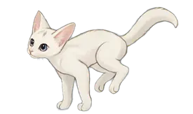
She trots along the tops of your windows, runs, jumps from one to the next and goes to visit whichever app you switch to.
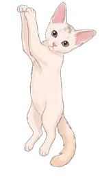
Window filling the whole screen? She kicks off its side to climb up, then hangs from the top edge and shuffles along paw over paw.
Sometimes she slips behind a window and peeks out over the edge, ears first.
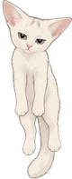
Click her and she purrs. Drag her and you pick her up by the scruff. Let go mid-swing and she flies.
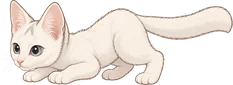
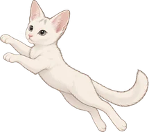
Move the cursor around near her and it becomes prey. She stalks it, wiggles and pounces.
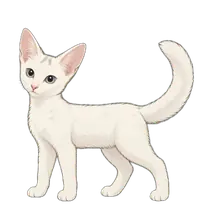
Startle her and she jumps, arches her back and puffs up. Closing a window or a tab gives her a fright too.
Type for a second and she runs over to your text box and types right next to it on her little typewriter. When you stop, she pushes it away.
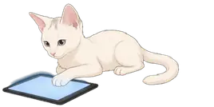
Scroll through a page and she lies down and swipes along on a tablet of her own.
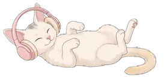
When something is playing she rolls onto her back, puts her headphones on and kicks along to it.
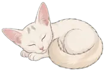
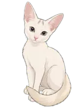
She gets tired, curls up for a nap, washes her paws and stretches with a big yawn when she wakes. Now and then she has something to say.
When there's a new version, she tells you herself. Click her and she fetches it, restarts and shows off the new her.
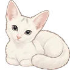
With the Chrome extension she jumps onto the page you're reading and walks along its text and pictures. On Maniac, she wrecks it.
Pick how lively she is in her menu (the cat in your menu bar, or right-click Yuki). She asks you the first time you open her, too.
Never jumps. Sits, loafs, grooms and naps, and takes the odd little stroll. Good for focus days.
A bit of everything: explores, naps, plays, comes to see what you're doing.
Always up to something. More running, jumping, climbing and hunting.
Everything at full speed, and she wrecks web pages. You've been warned.
With the Yuki extension for Chrome, the page in front of you becomes part of her world. She jumps onto lines of text, pictures and boxes, walks along them, rides along when you scroll and now and then leaves you a toy.
On Maniac she messes it up: bats letters off the headings until they pile up at the bottom, scratches the page, tilts pictures and knocks things right off.
It's all drawn on top of the page. Nothing on the website changes, and a reload puts everything back. She only plays on the page in front, in the Chrome window you're using.
Set it upYuki introduces herself and asks a few quick questions. You can replay that any time from her menu.
Developer mode is only needed until Yuki is on the Chrome Web Store.
In Chrome she already knows where you're typing. To have her come over in other apps too:
Optional. Without it she types wherever she is.
Click the cat in your menu bar, or right-click Yuki herself.
Yuki updates herself. When there's a new version she tells you (she's not shy about it). Click her and she fetches it, restarts and shows off the new her. You can also check from her menu, or turn automatic checks off there.
All of it. Nothing is recorded, saved or sent anywhere.
The only time Yuki goes online is to check for a new version of herself (a small file on GitHub, about every 30 minutes) and to download it when you say yes. Nothing about you is sent. You can turn the checks off in her menu.
Set Energy to Chill in her menu: no jumping, just quiet company. Or choose Hide Yuki, and Show Yuki when you miss her.
If you got the file through the App Store version of Telegram, macOS blocks it. Download it again in a browser (or AirDrop it) and it opens normally.
On web pages, only Chrome for now. Everywhere else on your Mac she works with any app.
Quit Yuki from her menu and drag Yuki from Applications to the Trash. If you added the Chrome extension, remove it on chrome://extensions.